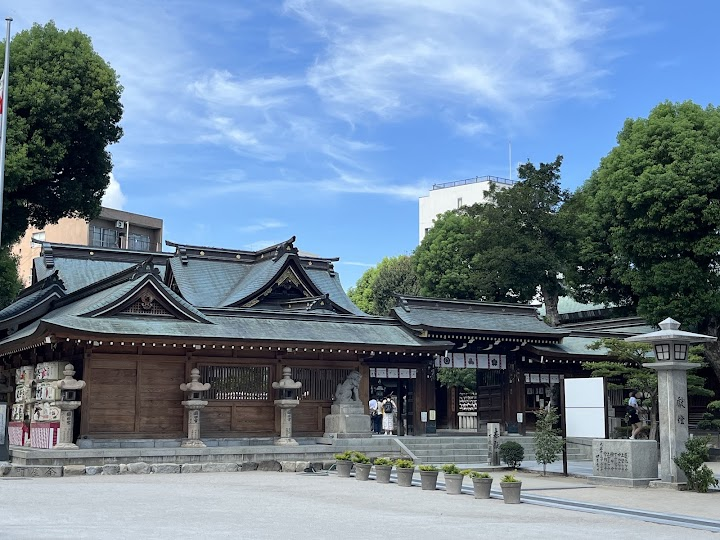
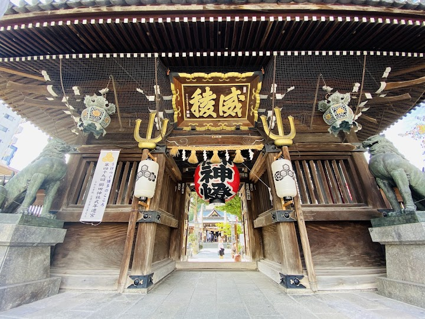
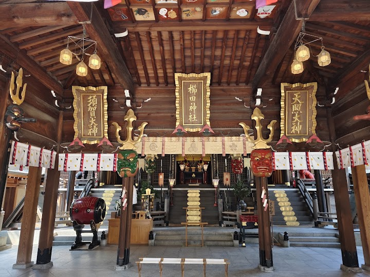
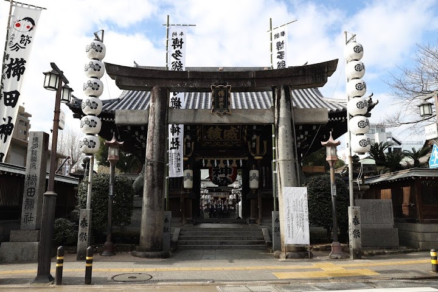
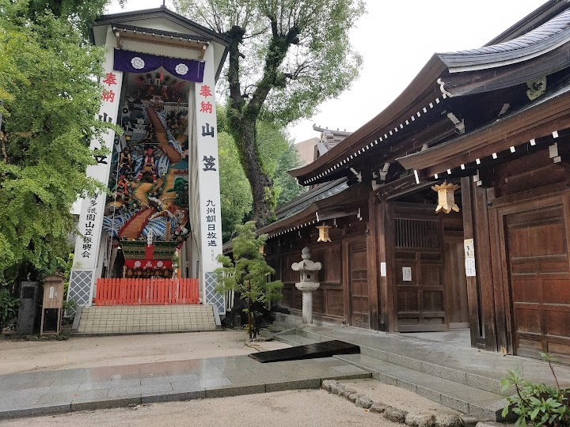

Kushida Shrine
Founded in 757 CE, this urban site annually hosts the city's largest festival, Hakata Gion Yamakasa.
Open in Google Maps (street view, more photos and reviews there)






Visitor tips on finding it and getting there
Kushida Shrine is a definite must visit in Fukuoka, and it is not so far from both Tenjin shopping area and Hakata station, making it a convenient destination to visit. The shrine houses a few images of Shintoism enshrined in delicate wooden traditional Japanese infrastructure. There is also an exquisitely detailed “Kazariyamakasa” float display, which is illuminated at night, belonging to the locally beloved “Hakata Gion Yamakasa Festival”. When we visited at evening after all the crowds died out, it brings a more enchanting atmosphere into the shrine. Outside, lots of traditional white lan
The Guardian Shrine of Hakata and the oldest is just located across Canal City. The Hakata summer festival "Gion Yamakasa" is dedicated to the shrine. Near the entrance is the Ginkgo Tree which is over 1,000 years old. The sacred tree is considered a designated cultural property of Fukuoka Prefecture. The stunning giant Yamakasa float for the festival which is around 13 meters tall is displayed at the open area. Entrance is free. The main gate has a great red lantern. The compass is decorated with the Chinese zodiac signs which shows the direction to look at each year to attract luck. Upon en